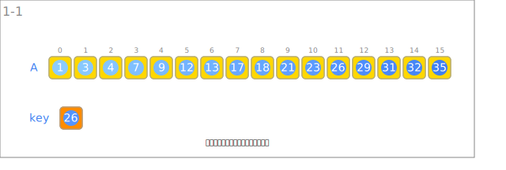
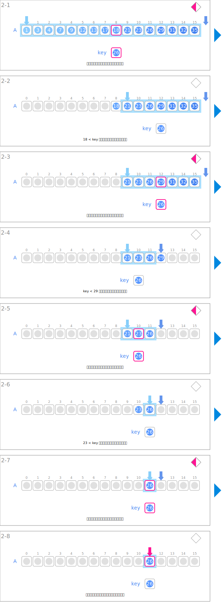

シンボル
| データ | ||
|---|---|---|
 | 探索対象となる整数の列。要素は昇順に整列されている必要がある。 | A |
 | 目的の値 | key |
| 入力 | ||
|---|---|---|
 | 整数の列を読み込みます。 | |
 | 目的の値を読み込みます。 | |
| 探索 | ||
 | 探索範囲の中央の値とキーを比較します。 | if A[mid] = key: else if A[mid] < key: |
| 探索範囲の先頭を指します。 | left | |
 | 探索範囲の末尾を指します。 | right |
| 目的の値の位置を指します。 | mid | |
 | 探索の範囲を縮小していきます。 | 区間[left, right) |
アニメーション
入力

探索
